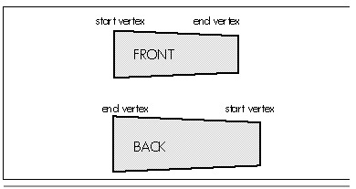

| Previous | Table of Contents | Next |
Now that we have all the walls clipped to the frustum, with vertices projected into screen coordinates, all we have to do is draw them back to front; that’s the job of DrawWallsBackToFront(). Basically, this routine walks the BSP tree, descending recursively from each node to draw the farther children of each node first, then the wall at the node, then the nearer children. In the interests of efficiency, this particular implementation performs a data-recursive walk of the tree, rather than the more familiar code recursion. Interestingly, the performance speedup from data recursion turned out to be more modest than I had expected, based on past experience; see Chapter 59 for further details.
As it comes to each wall, DrawWallsBackToFront() first descends to draw the farther subtree. Next, if the wall is both visible and pointing toward the viewer, it is drawn as a solid polygon. The polygon filler (not shown in Listing 62.1) is a modification of the polygon filler I presented in Chapters 38 and 39.
It’s worth noting how backface culling and front/back wall orientation testing are performed. (Note that walls are always one-sided, visible only from the front.) I discussed backface culling in general in the previous chapter, and mentioned two possible approaches: generating a screenspace normal (perpendicular vector) to the polygon and seeing which way that points, or taking the world or screenspace dot product between the vector from the viewpoint to any polygon point and the polygon’s normal and checking the sign. Listing 62.1 does both, but because our BSP tree is 2-D and the viewer is always upright, we can save some work.
Consider this: Walls are stored so that the left end, as viewed from the front side of the wall, is the start vertex, and the right end is the end vertex. There are only two possible ways that a wall can be positioned in screenspace, then: viewed from the front, in which case the start vertex is to the left of the end vertex, or viewed from the back, in which case the start vertex is to the right of the end vertex, as shown in Figure 62.4. So we can tell which side of a wall we’re seeing, and thus backface cull, simply by comparing the screenspace x coordinates of the start and end vertices, a simple 2-D version of checking the direction of the screenspace normal.
The wall orinetation test used for walking the BSP tree, performed in WallFacingViewer() takes the other approach, and checks the viewspace sign of the dot product of the wall’s normal with a vector from the viewpoint to the wall. Again, this code takes advantage of the 2-D nature of the tree to generate the wall normal by swapping x and z and altering signs. We can’t use the quicker screenspace x test here that we used for backface culling, because not all walls can be projected into screenspace; for example, trying to project a wall at z==0 would result in division by zero.
All the visible, front-facing walls are drawn into a buffer by DrawWallsBackToFront(), then UpdateWorld() calls Win32 to copy the new frame to the screen. The frame of animation is complete.

Figure 62.4 Fast backspace culling test in screenspace.
Listing 62.1 is far from complete or optimal. There is no such thing as a tiny BSP rendering demo, because 3D rendering, even when based on a 2-D BSP tree, requires a substantial amount of code and complexity. Listing 62.1 is reasonably close to a minimum rendering engine, and is specifically intended to illuminate basic BSP principles, given the space limitations of one chapter in a book that’s already larger than it should be. Think of Listing 62.1 as a learning tool and a starting point.
The most obvious lack in Listing 62.1 is that there is no support for floors and ceilings; the walls float in space, unsupported. Is it necessary to go to 3-D BSP trees to get a normal-looking world?
No. Although 3-D BSP trees offer many advantages in that they allow arbitrary datasets with viewing in any arbitrary direction and, in truth, aren’t much more complicated than 2-D BSP trees for back-to-front drawing, they do tend to be larger and more difficult to debug, and they aren’t necessary for floors and ceilings. One way to get floors and ceilings out of a 2-D BSP tree is to change the nature of the BSP tree so that polygons are no longer stored in the splitting nodes. Instead, each leaf of the tree—that is, each subspace carved out by the tree—would store the polygons for the walls, floors, and ceilings that lie on the boundaries of that space and face into that space. The subspace would be convex, because all BSP subspaces are automatically convex, so the polygons in that subspace can be drawn in any order. Thus, the subspaces in the BSP tree would each be drawn in turn as convex sets, back to front, just as Listing 62.1 draws polygons back to front.
This sort of BSP tree, organized around volumes rather than polygons, has some additional interesting advantages in simulating physics, detecting collisions, doing line-of-sight determination, and performing volume-based operations such as dynamic illumination and event triggering. However, that discussion will have to wait until another day.
| Previous | Table of Contents | Next |